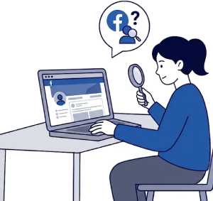

Guide til sikker handel online via en hjemmeside
Fire hurtige tjek: Trustpilot, e-mærket, hængelåsen i adresselinjen og selve hjemmesiden.
Det er en stigende udfordring, at mennesker bliver svindlet på nettet.
Mere end hver tredje dansker har oplevet, at blive snydt.
I takt med teknologiens udvikling, bliver det nemmere for svindlerne at kopiere hjemmesider, så de ser professionelle og ægte ud. Og svindlerne er også blevet dygtigere til, at snyde via. andre private platforme som f.eks. facebook market place.
Der er derfor ingen skam i at blive svindlet, det kan ramme alle. Men for at undgå at blive snydt, kan man gøre sig nogle enkelte få trin, for at teste sælgeren eller hjemmesidens troværdighed.
Her på siden har vi udviklet to meget simple guides, som hjælper dig med at undersøge, hvorvidt en hjemmeside eller en privat sælger er troværdig.
Fire hurtige tjek: Trustpilot, e-mærket, hængelåsen i adresselinjen og selve hjemmesiden.

Tre hurtige tjek: sælgerens profil, en sikker betaling og selve varen.
Er du stadig i tvivl om, hvorvidt en hjemmeside er troværdig eller er du allerede blevet snydt og ønsker at anmelde siden, så kan du gøre brug af vores kontaktformular og så hjælper vi dig med, at undersøge eller anmelde den givende hjemmeside.
Gå til kontaktformularen